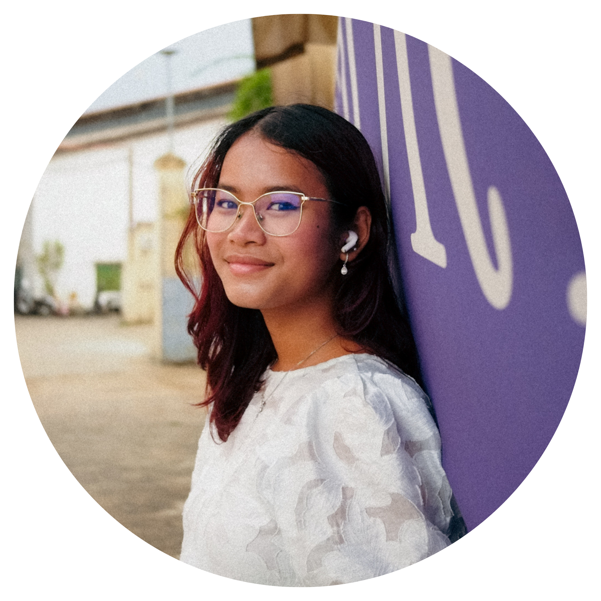

We are the AUPP Filmmakers, a student-led club at the American University of Phnom Penh.
Founded a year ago, our club was born from passion and driven by a desire to inspire.
Our goal is to build a creative community where everyone has the space to express themselves, share ideas, and turn inspiration into passion. As filmmakers, we aim to support, guide, and grow together through storytelling.

Leader
Co-Leader
The AUPP Filmmakers Club was created to fill a gap: there wasn't really a space for students to learn about film or for the community to explore it together. What began as a simple idea soon grew into a creative space where students and anyone interested in filmmaking can learn, create, and connect without pressure or expectations.
Founded by Victoria Johnson, the club was built from a genuine passion for storytelling and a desire to create opportunities that did not previously exist.
"When I first started this club, it was just a small idea-something I created out of passion and love for filmmaking," says Victoria. "When I was younger, I had this dream of becoming a filmmaker, someone who could create stories that people could watch and really feel something from. But as I grew older, I realized there wasn't really a space or opportunity for that here. And that's exactly why I created the AUPP Filmmakers Club."
As the club developed, Victoria chose Keat Amrin as co-leader because of their shared vision and mutual trust.
"I chose Amrin because he shared the same interest and passion for the club. And also because I could trust him with it," Victoria shares.
For Amrin, joining as co-leader was about supporting a meaningful cause and helping build something impactful.
"I chose to become co-leader alongside Vic mainly because I respect the cause...""I chose to become co-leader alongside Vic mainly because I respect the cause and felt that once called to it, I am able to make a difference and contribute to Vic's efforts," says Amrin.
Together, they created a space where creativity, collaboration, and storytelling can thrive-giving students the freedom to explore film, learn from one > another, and grow as creators.